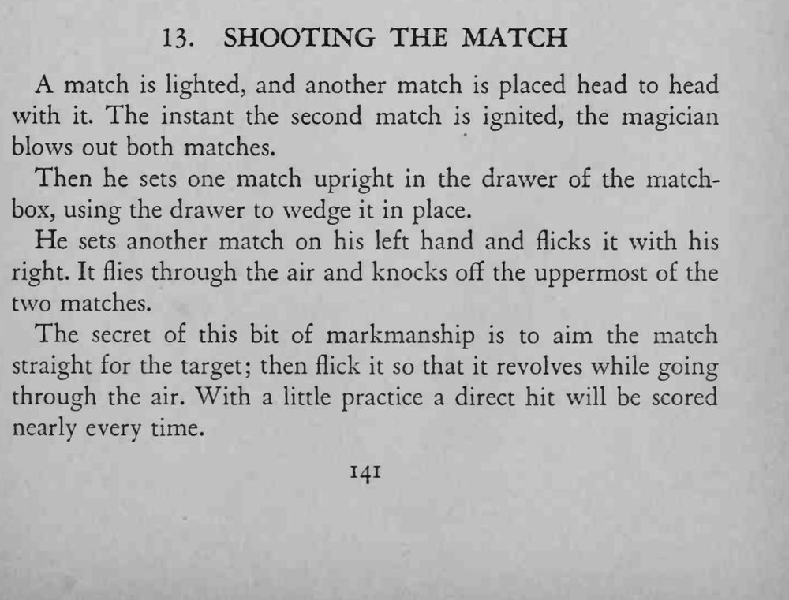

两根火柴点燃后立刻被吹灭，一根竖起作靶；魔术师把另一根火柴弹向空中，让它边飞边转，准确打落靶上最上面那根。
火柴要弹得直、转得匀，飞行才稳；原文对靶子的具体摆法描述略含混。

A match is lighted, and another match is placed head to head with it. The instant the second match is ignited, the magician blows out both matches. Then he sets one match upright in the drawer of the matchbox, using the drawer to wedge it in place. He sets another match on his left hand and flicks it with his right. It flies through the air and knocks off the uppermost of the two matches. The secret of this bit of markmanship is to aim the match straight for the target; then flick it so that it revolves while going through the air. With a little practice a direct hit will be scored nearly every time.